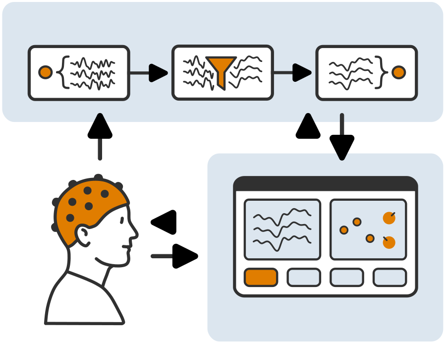

Basic Concepts
The g.Pype framework is built around a clear separation between backend and frontend components. At the backend, raw brain signals from an EEG device are propagated through a pipeline of connected nodes, where they are acquired, processed, and prepared for further use. The frontend then takes these processed signals and presents them in interactive applications with visualizations and controls. This structure allows researchers and developers to focus on flexible signal processing while providing decoupled, intuitive interfaces for users.
The figure above illustrates how signals propagate from the user wearing an EEG cap through the backend pipeline into the frontend where they can be explored and acted upon.
Backend
The backend implements all data processing and propagation logic that happens behind the scenes. It contains a pipeline with nodes and ports.
A pipeline connects individual nodes and efficiently manages data propagation between them.
A node is a processing unit in the pipeline. It receives input and sends output data through ports.
A port receives input or sends output data. Ports of different nodes can be connected.
Frontend
The frontend is the part of g.Pype you interact with directly. In the main app and its widgets, it provides the graphical interface for configuring, running, and visualizing your experiments.
The main app is the central, executable user interface of g.Pype. It contains an arrangement widgets for visualization and control.
A widget is a visualization or control panel inside the main app, allowing you to manage your experimental workflow and show processed data in real-time.
Terminology
This section introduces additional key terms in g.Pype to ensure clear and consistent usage across development, documentation, and deployment.
One scalar time-series signal, for example from an EEG electrode or keypress detector.
Single value of a channel, representing its signal at one discrete point in time.
Number of samples acquired or processed per channel per second, in Hertz (Hz).
Total number of parallel channels contained in a signal.
Discrete processing step where nodes receive input and produce output.
Block of data processed together in one step. May contain multiple samples and channels.
Number of samples per channel contained in one frame.
Dynamic environment of a node, determined by upstream nodes at runtime (e.g. sampling rate).
Static setup of a node, defined by the user. Determines behavior and remains fixed at runtime.